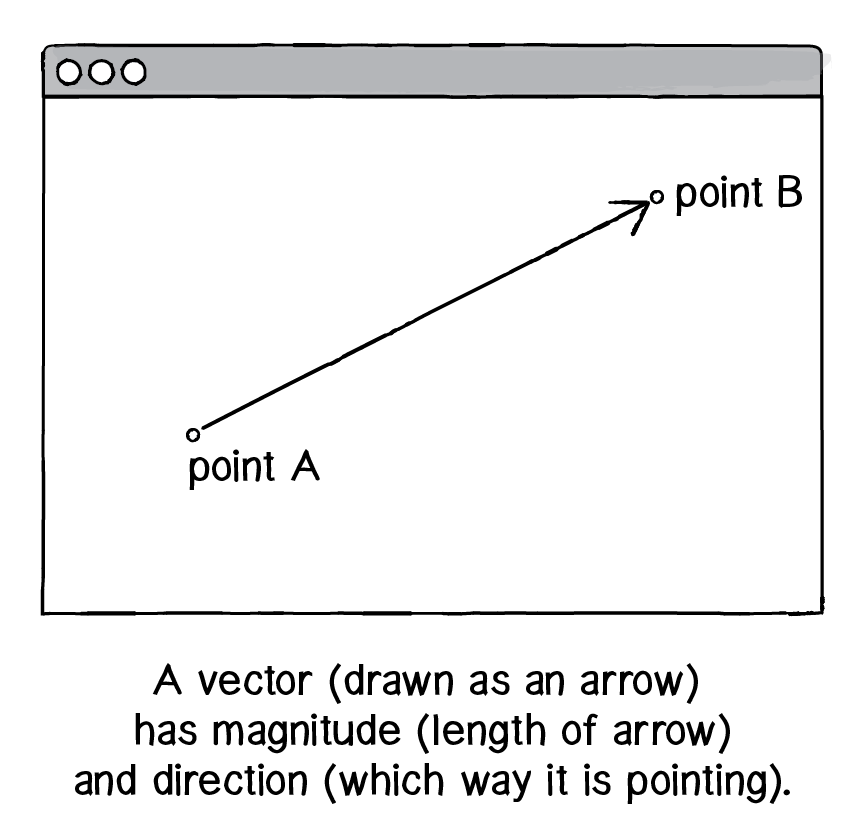
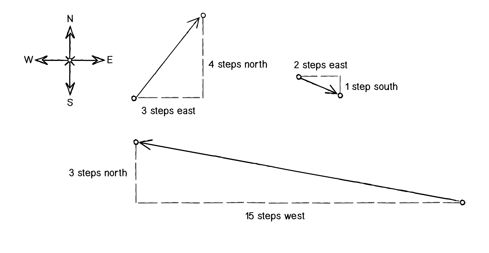
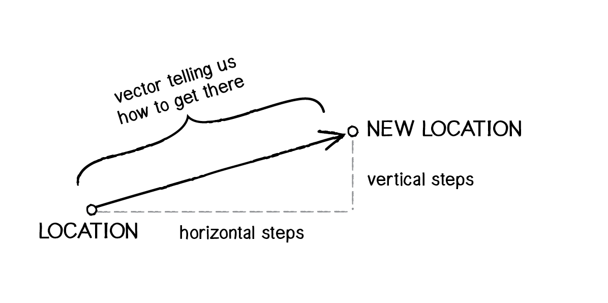
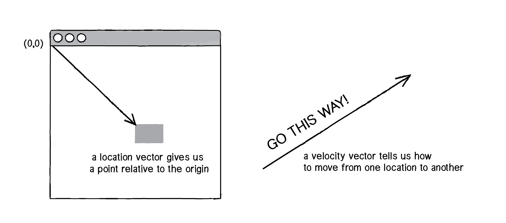
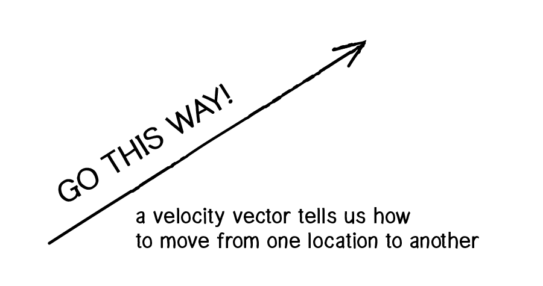
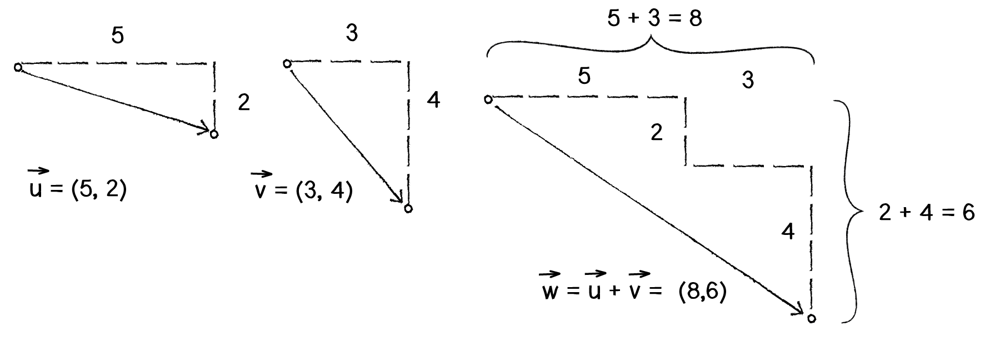
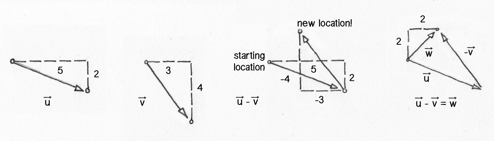
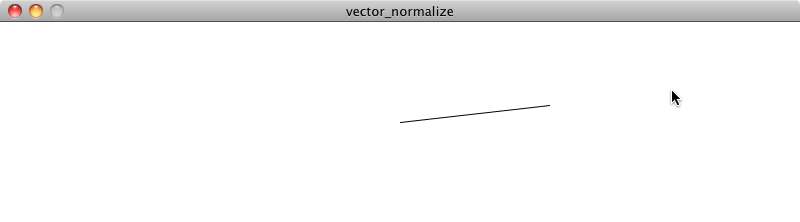

Chapter 1. Vectors
“Roger, Roger. What’s our vector, Victor?” —Captain Oveur, Airplane
This book is all about looking at the world around us and coming up with clever ways to simulate that world with code. Divided into three parts, the book will start by looking at basic physics—how an apple falls from a tree, a pendulum swings in the air, the earth revolves around the sun, etc. Absolutely everything contained within the first five chapters of this book requires the use of the most basic building block for programming motion—the vector. And so this is where we begin our story.
Now, the word vector can mean a lot of different things. Vector is the name of a new wave rock band formed in Sacramento, CA in the early 1980s. It’s the name of a breakfast cereal manufactured by Kellogg’s Canada. In the field of epidemiology, a vector is used to describe an organism that transmits infection from one host to another. In the C++ programming language, a Vector (std::vector) is an implementation of a dynamically resizable array data structure. While all these definitions are interesting, they’re not what we are looking for. What we want is called a Euclidean vector (named for the Greek mathematician Euclid and also known as a geometric vector). When you see the term “vector” in this book, you can assume it refers to a Euclidean vector defined as:
A vector is an entity that has both magnitude and direction.
A vector is typically drawn as a arrow; the direction is indicated by where the arrow is pointing, and the magnitude by the length of the arrow itself.
REDO THIS DIAGRAM NOW TO FIT NEW DEFINITION
In the diagram above, the vector is drawn as an arrow from point A to point B and serves as an instruction for how to travel from A to B.
1.1 Vectors, You Complete Me
Before we dive into more of the details about vectors, let’s look at a basic Processing example that demonstrates why we should care about vectors in the first place. If you’ve read any of the introductory Processing textbooks or taken a class on programming with Processing (and hopefully you’ve done one of these things to help prepare you for this book), you probably, at one point or another, learned to how to write a simple bouncing ball sketch.

Example 1.1: Bouncing ball with no vectors
void setup() {
size(200,200);
smooth();
background(255);
}
void draw() {
background(255);
x = x + xspeed;
y = y + yspeed;
if ((x > width) || (x < 0)) {
xspeed = xspeed * -1;
}
if ((y > height) || (y < 0)) {
yspeed = yspeed * -1;
}
stroke(0);
fill(175);
ellipse(x,y,16,16);
}
In the above example, we have a very simple world—a blank canvas with a circular shape (a “ball”) traveling around. This ball has some properties, which are represented in the code as variables.
*_LOCATION:_* *_x and y_* *_SPEED:_* *_xspeed and yspeed_*In a more advanced sketch, we could imagine having many more variables:
*_ACCELERATION:_* *_xacceleration and yacceleration_* *_TARGET LOCATION:_* *_xtarget and ytarget_* *_WIND:_* *_xwind and ywind_* *_FRICTION:_* *_xfriction and yfriction_*It’s becoming more and more clear that for every concept in this world (wind, location, acceleration, etc.), we need two variables. And this is only a two-dimensional world. In a 3D world, we’ll need x, y, z, xspeed, yspeed, zspeed, and so on.
Wouldn’t it be nice if we could simplify our code and use fewer variables?
Instead of:
float x;
float y;
float xspeed;
float yspeed;
Wouldn’t it be nice to have. . .
Vector location;
Vector speed;
Taking this first step in using vectors won’t allow us to do anything new. Just adding vectors won’t magically make your Processing sketches simulate physics; however, they will simplify your code and provide a set of functions for common mathematical operations that happen over and over and over again while programming motion.
As an introduction to vectors, we’re going to live in two dimensions for quite some time (at least until we get through the first several chapters.) All of these examples can be fairly easily extended to three dimensions (and the class we will use—[class]*PVector*—allows for three dimensions.) However, for the time being, it’s easier to start with just two.
1.2 Vectors: What are they to us Processing programmers?
One way to think of a vector is the difference between two points. Consider how you might go about providing instructions to walk from one point to another.
Here are some vectors and possible translations:
( 3, 5) —> Walk three steps east, turn and walk five steps north. ( 2,-1) —> Walk two steps east, turn and walk one step south. (-15, 3) —> Walk fifteen steps west, turn and walk three steps north.
You’ve probably done this before when programming motion. For every frame of animation (i.e. a single cycle through Processing’s draw() loop), you instruct each object on the screen to move a certain number of pixels horizontally and a certain number of pixels vertically.
For every frame:
new location = velocity applied to current location
If velocity is a vector (the difference between two points), what is location? Is it a vector too? Technically, one might argue that location is not a vector, since it’s not describing how to move from one point to another—it’s simply describing a singular point in space. And so conceptually, we think of a location as different.
 CONSIDER COMBINING / INTEGRATING THIS DIAGRAM WITH PREVIOUS ONE BETTER
Nevertheless, another way to describe a location is the path taken from the origin to reach that location. Hence, a location can be the vector representing the difference between location and origin.
Let’s examine the underlying data for both location and velocity. In the bouncing ball example we had the following:
location —> x,y velocity —> [var]*xspeed,yspeed
Notice how we are storing the _same data for both_—two floating point numbers, an x and a y. If we were to write a vector class ourselves, we’d start with something rather basic:
class PVector {
float x;
float y;
PVector(float x_, float y_) {
x = x_;
y = y_;
}
}
At its core, a PVector is just a convenient way to store two values (or three, as we’ll see in 3D examples.).
And so this. . .
float x = 100;
float y = 100;
float xspeed = 1;
float yspeed = 3.3;
. . becomes . . .
PVector location = new PVector(100,100);
PVector velocity = new PVector(1,3.3);
Now that we have two vector objects (“location” and “velocity”), we’re ready to implement the algorithm for motion—location = location + velocity. In Example 1.1, without vectors, we had:
x = x + xspeed;
y = y + yspeed;
In an ideal world, we would be able to rewrite the above as:
[line-through]*location = location + velocity;*However, in Processing, the addition operator ‘+’ is reserved for primitive values (integers, floats, etc.) only. Processing doesn’t know how to add two PVector objects together any more than it knows how to add two PFont objects or PImage objects. Fortunately for us, the PVector class includes functions for common mathematical operations.
1.3 Vector Addition
Before we continue looking at the PVector class and its add() method (purely for the sake of learning since it’s already implemented for us in Processing itself), let’s examine vector addition using the notation found in math and physics textbooks
Vectors are typically written either in boldface type or with an arrow on top. For the purposes of this book, to distinguish a vector from a scalar (scalar refers to a single value, such as an integer or a floating point number), we’ll use the arrow notation:
Vector: u* Scalar: [var]*x
Let’s say I have the following two vectors:
Each vector has two components, an x and a y. To add two vectors together we simply add both x’s and both y’s. In other words:
[vector]*w* = Vector: [vector]*u* + Vector: [vector]*v*translates to:
[vector]*w*~x~ = [var]*u~x~* + [var]*v~x~* [vector]*w*~y~ = [var]*u~y~* + [var]*v~y~*and therefore:
[vector]*w*~x~ = 5 + 3 [vector]*w*~y~ = 2 + 4and therefore:
[vector]*w* = (8,6) Now that we understand how to add two vectors together, we can look at how addition is implemented in the PVector class itself. Let’s write a function called add() that takes as its argument another PVector object.
class PVector {
float x;
float y;
PVector(float x_, float y_) {
x = x_;
y = y_;
}
*// New! A function to add another PVector to this PVector. Simply add the x components and the y components together.
void add(PVector v) {
x = x + v.x;
y = y + v.y;
}*
}
Now that we see how add() is written inside of PVector, we can return to the location + velocity algorithm with our bouncing ball example and implement vector addition:
[line-through]*location = location + velocity;*
location.add(velocity);
And here we are, ready to rewrite the bouncing ball example using PVector.
Example 1.2: Bouncing ball with PVector!
*_PVector location;_*
*_PVector velocity;_*
void setup() {
size(200,200);
smooth();
*_location = new PVector(100,100);_*
*_velocity = new PVector(2.5,5);_*
}
void draw() {
background(255);
*_location.add(velocity);
if ((location.x > width) || (location.x < 0)) {
velocity.x = velocity.x * -1;
}
if ((location.y > height) || (location.y < 0)) {
velocity.y = velocity.y * -1;
}_*
stroke(0);
fill(175);
*_ellipse(location.x,location.y,16,16);_*
}
Now, you might feel somewhat disappointed. After all, this may initially appear to have made the code more complicated than the original version. While this is a perfectly reasonable and valid critique, it’s important to understand that we haven’t fully realized the power of programming with vectors just yet. Looking at a simple bouncing ball and only implementing vector addition is just the first step. As we move forward into a more complex world of multiple objects and multiple forces (Chapter 2), the benefits of PVector will become more apparent.
We should, however, make note of an important aspect of the above transition to programming with vectors. Even though we are using PVector objects to describe two values—the x and y of location and the x and y of velocity—we still often need to refer to the x and y components of each PVector individually. When we go to draw an object in Processing, there’s no means for us to say:
[line-through]*ellipse(location,16,16);*The ellipse() function does not allow for a PVector as an argument. An ellipse can only be drawn with two scalar values, an x coordinate and a y coordinate. And so we must dig into the PVector object and pull out the x and y components using object-oriented dot syntax.
ellipse(location.x,location.y,16,16);The same issue arises when testing if the circle has reached the edge of the window, and we need to access the individual components of both vectors: location and velocity.
if ((location.x > width) || (location.x < 0)) {
velocity.x = velocity.x * -1;
}
Exercise 1.1
Find something you’ve previously made in Processing using separate x and y variables and use PVectors instead.
Exercise 1.2
Take any of the walker examples from the introduction and convert it to use PVectors.
Exercise 1.3
Extend the bouncing ball with vectors example into 3D. Can you get a sphere to bounce around a box?
1.4 More Vector Math
Addition was really just the first step. There are many mathematical operations that are commonly used with vectors. Below is a comprehensive list of the operations available as functions in the PVector class. We’ll go through a few of the key ones now. As our examples get more and more sophisticated in later chapters, we’ll continue to reveal the details of more functions.
[function]*add()*—add vectors
[function]*sub()*—subtract vectors
[function]*mult()*—scale the vector with multiplication
[function]*div()*—scale the vector with division
[function]*mag()*—calculate the magnitude of a vector
[function]*normalize()*—normalize the vector to unit length of 1
[function]*limit()*—limit the magnitude of a vector
[function]*heading2D()*—the heading of a vector expressed as an angle
[function]*rotate()*—rotate a 2D vector by an angle
[function]*dist()*—the Euclidean distance between two vectors (considered as points)
[function]*angleBetween()*—find the angle between two vectors
[function]*dot()*—the dot product of two vectors
[function]*cross()*—the cross product of two vectors (only relevant in three dimensions)
[CHECK WHAT NEW ONES I’M ADDING IN 2.0]
Having already covered addition, let’s start with subtraction. This one’s not so bad; just take the plus sign and replace it with a minus!
Vector subtraction:w=u - v
translates to: wx = ux - vx wy = uy - vy
and the function inside PVector therefore looks like:
void sub(PVector v) {
x = x - v.x;
y = y - v.y;
}


The following example demonstrates vector subtraction by taking the difference between two points—the mouse location and the center of the window.
Example 1-3: Vector subtraction
void setup() {
size(200,200);
smooth();
}
void draw() {
background(255);
PVector mouse = new PVector(mouseX,mouseY);
PVector center = new PVector(width/2,height/2);
mouse.sub(center); translate(width/2,height/2);
line(0,0,mouse.x,mouse.y);
}
No Heading
Both addition and subtraction with vectors follow the same algebraic rules as with real numbers.
The commutative rule:u + v* = [vector]*v + [vector]*u*
The associative rule: [vector]u + (v + w) = ([vector]u + v) + [vector]*w*
Fancy terminology and symbols aside, this is really quite a simple concept. We’re just saying that common sense properties of addition apply to vectors as well.
*_3 + 2 = 2 + 3_**_(3 + 2) + 1 = 3 + (2 + 1)_*Moving on to multiplication, we have to think a little bit differently. When we talk about multiplying a vector, what we typically mean is scaling a vector. In the case that we want to scale a vector to twice its size or one-third of its size (leaving its direction the same), we would say: “Multiply the vector by 2” or “Multiply the vector by 1/3.” Note we are multiplying a vector by a scalar, a single number, not another vector.
To scale a vector, we multiply each component (x and y) by a scalar.
Vector multiplication:w = u * n
translates to: wx = ux * n wy = uy * n
Let’s look at an example with vector notation.
[vector]*u* = (-3,7) n = 3[vector]*w* = [vector]*u* * n w~x~ = -3 * 3 w~y~ = 7 * 3[vector]*w* = (-9, 21)The function inside the PVector class therefore is written as:
void mult(float n) {
x = x * n;
y = y * n;
}
And implementing multiplication in code is as simple as:
PVector u = new PVector(-3,7);
u.mult(3);

Example 1-4: Multiplying a vector
void setup() {
size(200,200);
smooth();
}
void draw() {
background(255);
PVector mouse = new PVector(mouseX,mouseY);
PVector center = new PVector(width/2,height/2);
mouse.sub(center);
mouse.mult(0.5);
translate(width/2,height/2);
line(0,0,mouse.x,mouse.y);
}

Division works just like multiplication—we simply replace the multiplication sign (asterisk) with the division one (forward slash).
void div(float n) {
x = x / n;
y = y / n;
}
PVector u = new PVector(8,-4);
u.div(2);

.
As with addition, basic algebraic rules of multiplication and division apply to vectors.
The associative rule: (n * m) [vector]*v = n * (m [vector]*v) The distributive rule with 2 scalars, 1 vector: (n * m) [vector]*v = n * v + m [vector]*v The distributive rule with 2 vectors, 1 scalar: (u*+ [vector]*v) * n = n * u + n * [vector]*v*
1.5 Vector Magnitude
Multiplication and division, as we just saw, are means by which the length of the vector can be changed without affecting direction. Perhaps you’re wondering: “OK, so how do I know what the length of a vector is? I know the components (x and y), but how long (in pixels) is the actual arrow?!”

.
The length or “magnitude” of a vector v is often written as: ||[vector]v ||
Understanding how to calculate the length (also known as magnitude) of a vector is incredibly useful and important.
Notice in the above diagram how the vector, drawn as an arrow and two components (x and y), creates a right triangle. The sides are the components and the hypotenuse is the arrow itself. We’re very lucky to have this right triangle, because once upon a time, a Greek mathematician named Pythagoras developed a lovely formula to describe the relationship between the sides and hypotenuse of a right triangle.

The Pythagorean theorem: a squared plus b squared equals c squared.
Armed with this formula, we can now compute the magnitude of v as follows:
|| v || = sqrt (vx * vx + vy * vy)
or in PVector:
float mag() {
return sqrt(x*x + y*y);
}
Example 1-5: Vector magnitude
void setup() {
size(200,200);
smooth();
}
void draw() {
background(255);
PVector mouse = new PVector(mouseX,mouseY);
PVector center = new PVector(width/2,height/2);
mouse.sub(center);
float m = mouse.mag();
fill(0);
rect(0,0,m,10);
translate(width/2,height/2);
line(0,0,mouse.x,mouse.y);
}
1.6 Normalizing Vectors
Calculating the magnitude of a vector is only the beginning. The magnitude function opens the door to many possibilities, the first of which is normalization. Normalizing refers to the process of making something “standard” or, well, “normal.” In the case of vectors, let’s assume for the moment that a standard vector has a length of one. To normalize a vector, therefore, is to take a vector of any length and, keeping it pointing in the same direction, change its length to one, turning it into what is called a unit vector.

The ability to quickly access the unit vector is useful since it describes a vector’s direction without regard to length, and we’ll see this come in handy once we start to work with forces in Chapter 2.
For any given vector u, its unit vector (written as û) is calculated as follows:
var]*û* = u / || [vector]*u*||
In other words, to normalize a vector, simply divide each component by its magnitude. This is pretty intuitive. Say a vector is of length 5. Well, 5 divided by 5 is 1. So looking at our right triangle, we then need to scale the hypotenuse down by dividing by 5. In that process the sides shrink, divided by 5 as well.
In the PVector class, we therefore write our normalization function as follows:
void normalize() {
float m = mag();
div(m);
}
Of course, there’s one small issue. What if the magnitude of the vector is zero? We can’t divide by zero! Some quick error checking will fix that right up:
void normalize() {
float m = mag();
if (m != 0) {
div(m);
}
}

Example 1-6: Normalizing a vector
void draw() {
background(255);
PVector mouse = new PVector(mouseX,mouseY);
PVector center = new PVector(width/2,height/2);
mouse.sub(center);
mouse.normalize();
mouse.mult(50);
translate(width/2,height/2);
line(0,0,mouse.x,mouse.y);
}
1.7 Vector Motion: Velocity
Why should we care? Yes, all this vector math stuff sounds like something we should know about, but why exactly? How will it actually help us write code? The truth of the matter is that we need to have some patience. The awesomeness of using the PVector class will take some time to fully come to light. This is actually quite common when first learning a new data structure. For example, when you first learn about an array, it might seem like much more work to use an array than to just have several variables stand for multiple things. But that plan quickly breaks down when you need a hundred, or a thousand, or ten thousand things. The same can be true for PVector. What might seem like more work now will pay off later, and pay off quite nicely. And you don’t have to wait too long, as your reward will come in the next chapter.
For now, however, we want to focus on simplicity. What does it mean to program motion using vectors? We’ve seen the beginning of this in Example 1.2 [REF]: the bouncing ball. An object on screen has a location (where it is at any given moment) as well as a velocity (instructions for how it should move from one moment to the next). Velocity is added to location:
location.add(velocity);And then we draw the object at that location:
ellipse(location.x,location.y,16,16);This is Motion 101.
Add velocity to location
Draw object at location
In the bouncing ball example, all of this code happened in Processing’s main tab, within setup() and draw(). What we want to do now is move towards encapsulating all of the logic for motion inside of a class. This way, we can create a foundation for programming moving objects in Processing. In [REF] Section section I.2 of the introduction, “The Random Walker Class,” we briefly reviewed the basics of object-oriented-programming (“OOP”). Beyond that short introduction, this book assumes experience with objects and classes in Processing. If you need a refresher, I encourage you to check out the online OOP Processing tutorial: Processing objects tutorial .
In this case, we’re going to create a generic Mover class, a class to describe a thing moving around the screen. And so we must consider the following two questions:
What data does a Mover have?
What functionality does a Mover have?
Our “Motion 101” algorithm tells us the answers to these questions. A Mover object has two pieces of data: location and velocity, two PVector objects.
class Mover {
PVector location;
PVector velocity;
Its functionality is just about as simple. The Mover needs to move and it needs to be seen. We’ll implement these as functions named update() and display(). update() is where we’ll put all of our motion logic code and display() is where we will draw the object.
void update() { location.add(velocity);
}
void display() {
stroke(0);
fill(175);
ellipse(location.x,location.y,16,16);
}
}
We’ve forgotten one crucial item, however: the object’s constructor. The constructor is a special function inside of a class that creates the instance of the object itself. It is where you give instructions on how to set up the object. It always has the same name as the class and is called by invoking the new operator: “Mover m = new Mover( ); ”.
In our case, let’s arbitrarily decide to initialize our mover object by giving it a random location and a random velocity.
Mover() {
location = new PVector(random(width),random(height));
velocity = new PVector(random(-2,2),random(-2,2));
}
If object-oriented programming is at all new to you, one aspect here may seem a bit confusing. After all, we spent the beginning of this chapter discussing the PVector class. The PVector class is the template for making the object “location” and the object “velocity”. So what are they doing inside of yet another object, the Mover object? In fact, this is just about the most normal thing ever. An object is simply something that holds data (and functionality). That data can be numbers (integers, floats, etc.) or other objects! We’ll see this over and over again in this book. For example, in Chapter 4 [REF], we’ll write a class to describe a system of particles. That “ParticleSystem” object will have as its data a list of Particle objects. . .and each Particle object will have as its data several PVector objects!
Let’s finish off the Mover class by incorporating a function to determine what the object should do when it reaches the edge of the window. For now let’s do something simple, and just have it wrap around the edges.
void checkEdges() { if (location.x > width) {
location.x = 0;
} else if (location.x < 0) {
location.x = width;
}
if (location.y > height) {
location.y = 0;
} else if (location.y < 0) {
location.y = height;
}
}
Now that the Mover class is finished, we can look at what we need to do in our main program. We first declare a Mover object:
Mover mover;Then initialize the mover in setup():
mover = new Mover();and call the appropriate functions in draw():
mover.update();
mover.checkEdges();
mover.display();
Here is the entire example for reference:

Example 1.7: Motion 101 (velocity)
Mover mover; // Declare Mover object.
void setup() {
size(200,200);
smooth();
background(255);
mover = new Mover(); // Create Mover object.
}
void draw() {
background(255);
mover.update(); // Call functions on Mover object.
mover.checkEdges();
mover.display();
}
class Mover {
PVector location; // Our object has two PVectors: location and velocity.
PVector velocity;
Mover() {
location = new PVector(random(width),random(height));
velocity = new PVector(random(-2,2),random(-2,2));
}
void update() {
location.add(velocity); // Motion 101: Location changes by velocity.
}
void display() {
stroke(0);
fill(175);
ellipse(location.x,location.y,16,16);
}
void checkEdges() {
if (location.x > width) {
location.x = 0;
} else if (location.x < 0) {
location.x = width;
}
if (location.y > height) {
location.y = 0;
} else if (location.y < 0) {
location.y = height;
}
}
}
1.8 Vector Motion: Acceleration
OK. At this point, we should feel comfortable with two things: (1) what a PVector is and (2) how we use PVectors inside of an object to keep track of its location and movement. This is an excellent first step and deserves a mild round of applause. Before standing ovations and screaming fans, however, we need to make one more, somewhat larger, step forward. After all, watching the Motion 101 example is fairly boring—the circle never speeds up, never slows down, and never turns. For more interesting motion, for motion that appears in the real world around us, we need to add one more PVector to our class—acceleration.
The strict definition of acceleration we’re using here is: the rate of change of velocity. Let’s think about that definition for a moment. Is this a new concept? Not really. Velocity is defined as the rate of change of location. In essence, we are developing a “trickle down” effect. Acceleration affects velocity, which in turn affects location (for some brief foreshadowing, this point will become even more crucial in the next chapter when we see how forces affect acceleration, which affects velocity, which affects location.) In code, this reads:
velocity.add(acceleration);
location.add(velocity);
As an exercise, from this point forward, let’s make a rule for ourselves. Let’s write every example in the rest of this book without ever touching the value of velocity and location (except to initialize them). In other words, our goal now for programming motion is as follows—come up with an algorithm for how we calculate acceleration and let the trickle-down effect work its magic. (In truth, you’ll find reasons to break this rule, but it’s important to illustrate the principles behind our motion algorithm.) And so we need to come up with some ways to calculate acceleration:
*ACCELERATION ALGORITHMS!
1) A constant acceleration 2) A totally random acceleration 3) Acceleration towards the mouse*
Algorithm #1, a constant acceleration, is not particularly interesting, but it is the simplest and will help us begin incorporating acceleration into our code. The first thing we need to do is add another PVector to the Mover class:
class Mover {
PVector location;
PVector velocity;
PVector acceleration;And incorporate acceleration into the update() function:
void update() { velocity.add(acceleration);
location.add(velocity);
}
We’re almost done. The only missing piece is initialization in the constructor.
Mover() {Let’s start the mover object in the middle of the window. . .
location = new PVector(width/2,height/2);. . with an initial velocity of zero.
velocity = new PVector(0,0);This means that when the sketch starts, the object is at rest. We don’t have to worry about velocity anymore as we are controlling the object’s motion entirely with acceleration. Speaking of which, according to Algorithm #1, our first sketch involves constant acceleration. So let’s pick a value.
acceleration = new PVector(-0.001,0.01);
}
Maybe you’re thinking, “Gosh, those values seem awfully small!” That’s right, they are quite tiny. It’s important to realize that our acceleration values (measured in pixels) accumulate over time in the velocity, about thirty times per second depending on our sketch’s frame rate. And so to keep the magnitude of the velocity vector within a reasonable range, our acceleration values should remain quite small. We can also help this cause by incorporating the PVector function limit().
velocity.limit(10);This translates to the following:
What is the magnitude of velocity? If it’s less than 10, no worries; just leave it as is. If it’s more than 10, however, reduce it to 10!
Exercise 1-4
Write the limit() function for the PVector class.
void limit(float max) { if (_ > _) { (); _(max); } }
Let’s take a look at the changes to the Mover class, complete with acceleration and limit().

Example 1.8: Motion 101 (velocity and constant acceleration)
class Mover {
PVector location;
PVector velocity;
PVector acceleration; // Acceleration is the key!
float topspeed; // The variable, topspeed, will limit
the magnitude of velocity.
Mover() {
location = new PVector(width/2,height/2);
velocity = new PVector(0,0);
acceleration = new PVector(-0.001,0.01);
topspeed = 10;
}
void update() {
velocity.add(acceleration); // Velocity changes by acceleration
velocity.limit(topspeed); and is limited by topspeed.
location.add(velocity);
}
}Exercise 1-4
Create a simulation of a car (or runner) that accelerates when you press the up key and brakes when you press the down key.
Now to Algorithm #2,“a totally random acceleration.” In this case, instead of initializing acceleration in the object’s constructor, we want to pick a new acceleration each cycle, i.e. each time update() is called.

Example 1.9: Motion 101 (velocity and random acceleration)
void update() {
acceleration = new PVector(random(-1,1),random(-1,1));
acceleration.normalize();
velocity.add(acceleration);
velocity.limit(topspeed);
location.add(velocity);
}
While normalizing acceleration is not entirely necessary, it does prove useful, as it standardizes the magnitude of the vector, allowing us to try different things. Such as:
(a) scaling the acceleration to a constant value
acceleration = new PVector(random(-1,1),random(-1,1));
acceleration.normalize();
*acceleration.mult(0.5);*
(b) scaling the acceleration to a random value
acceleration = new PVector(random(-1,1),random(-1,1));
acceleration.normalize();
*acceleration.mult(random(2));*
While this may seem like an obvious point, it’s crucial to understand that acceleration does not merely refer to the speeding up or slowing down of a moving object, but rather any change in velocity in either magnitude or direction. Acceleration is used to steer an object, and we’ll see this again and again in future chapters as we begin to program objects that make decisions about how to move about the screen.
Exercise 1-5
Referring back to section I.6 of the Introduction [REF], implement acceleration according to Perlin noise.
1.9 Static vs. Non-Static Functions
Before we get to acceleration Algorithm #3 (accelerate towards the mouse), we need to cover one more rather important aspect of working with vectors and the PVector class: the difference between using static methods and non-static methods.
Forgetting about vectors for a moment, take a look at the following code:
float x = 0;
float y = 5;
x = x + y;
Pretty simple, right? x has the value of 0, we add y to it, and now x is equal to 5. We could write the corresponding code pretty easily based on what we’ve learned about PVector.
PVector v = new PVector(0,0);
PVector u = new PVector(4,5);
v.add(u);
The vector v has the value of (0,0), we add u to it, and now v is equal to (4,5). Easy, right?
OK, let’s take a look at another example of some simple floating point math:
float x = 0;
float y = 5;
float z = x + y;
x has the value of 0, we add y to it, and store the result in a new variable z. The value of x does not change in this example (neither does y)! This may seem like a trivial point, and one that is quite intuitive when it comes to mathematical operations with floats. However, it’s not so obvious with mathematical operations in PVector). Let’s try to write the code based on what we know so far.
PVector v = new PVector(0,0);
PVector u = new PVector(4,5);
[line-through]*PVector w = v.add(u);*The above might seem like a good guess, but it’s just not the way the PVector class works. If we look at the definition of add() . . .
void add(PVector v) {
x = x + v.x;
y = y + v.y;
}
. . we see that this code does not accomplish our goal. First, it does not return a new PVector (the return type is “void”) and second, it changes the value of the PVector upon which it is called. In order to add two PVector objects together and return the result as a new PVector, we must use the static add() function.
Functions that we call from the class name itself (rather than from a specific object instance) are known as static functions. Here are two examples of function calls that assume two PVector objects, v and u:
PVector.add(v,u);v.add(u);Since you can’t write static functions yourself in Processing, you might not have encountered them before. PVector*’s static functions allow us to perform generic mathematical operations on [class]*PVector objects without having to adjust the value of one of the input PVectors. Let’s look at how we might write the static version of add():
static PVector add(PVector v1, PVector v2) {
PVector v3 = new PVector(v1.x + v2.x, v1.y + v2.y);
return v3;
}
There are several differences here:
The function is labeled as static.
The function does not have a void return type, but rather returns a PVector.
The function creates a new PVector (v3) and returns the sum of the components of v1 and v2 in that new PVector.
When you call a static function, instead of referencing an actual object instance, you simply reference the name of the class itself.
PVector v = new PVector(0,0);
PVector u = new PVector(4,5);
[line-through]*PVector w = v.add(u);*
*PVector w = PVector.add(v,u);*
The PVector class has static versions of add(), sub(), mult(), and div().
Exercise 1-6
Translate the following pseudocode to code using static or non-static functions where appropriate.
The PVector [var]*v equals (1,5)
The PVector u equals v multiplied by 2.
The PVector w equals v minus u.
Divide the PVector w by 3.
PVector v = new PVector(1,5); PVector u = .(,); PVector w = .(,); _;
1.10 Interactivity with acceleration
To finish out this chapter, let’s try something a bit more complex and a great deal more useful. We’ll dynamically calculate an object’s acceleration according to a rule, acceleration Algorithm #3 —“the object accelerates towards the mouse.”

Anytime we want to calculate a vector based on a rule or a formula, we need to compute two things: magnitude and direction. Let’s start with direction. We know the acceleration vector should point from the object’s location towards the mouse location. Let’s say the object is located at the point (x,y) and the mouse at (mouseX,mouseY).

As illustrated in the above diagram, we see that we can get a vector (dx,dy) by subtracting the object’s location from the mouse’s location.
[var]*dx = mouseX - x *[var]*dy = mouseY - [var]*y
Let’s rewrite the above using PVector syntax. Assuming we are in the Mover class and thus have access to the object’s location PVector, we then have:
PVector mouse = new PVector(mouseX,mouseY);PVector dir = PVector.sub(mouse,location);We now have a PVector that points from the mover’s location all the way to the mouse. If the object were to actually accelerate using that vector, it would appear instantaneously at the mouse location. This does not make for good animation, of course, and what we want to do now is decide how quickly that object should accelerate toward the mouse.
In order to set the magnitude (whatever it may be) of our acceleration PVector, we must first __ that direction vector. That’s right, you said it. Normalize. If we can shrink the vector down to its unit vector (of length one) then we have a vector that tells us the direction and can easily be scaled to any value. One multiplied by anything equals anything.
float anything = ?????
dir.normalize();
dir.mult(anything);
To summarize, we take the following steps:
Calculate a vector that points from the object to the target location (mouse).
Normalize that vector (reducing its length to 1)
Scale that vector to an appropriate value (by multiplying it by some value)
Assign that vector to acceleration
And here are those steps in the update() function itself:

void update() {
PVector mouse = new PVector(mouseX,mouseY);
PVector dir = PVector.sub(mouse,location); dir.normalize(); dir.mult(0.5); acceleration = dir;
velocity.add(acceleration);
velocity.limit(topspeed);
location.add(velocity);
}
You may be wondering why the circle doesn’t stop when it reaches the target. It’s important to note that the object moving has no knowledge about trying to stop at a destination; it only knows where the destination is and tries to go there as quickly as possible. Going as quickly as possible means it will inevitably overshoot the location and have to turn around, again going as quickly as possible towards the destination, overshooting it again, and so on, and so forth. Stay tuned; in later chapters we’ll learn how to program an object to “arrive” at a location (slow down on approach).
Exercise 1-7
This example is remarkably close to the concept of gravitational attraction (in which the object is attracted to the mouse location). Gravitational attraction will be covered in more detail in the next chapter. However, one thing missing here is that the strength of gravity (magnitude of acceleration) is inversely proportional to distance. This means that the closer the object is to the mouse, the faster it accelerates. Try implementing the above example with a variable magnitude of acceleration, stronger when it is either closer or farther away.
Let’s see what this example would look like with an array of Mover objects (rather than just one).

Example 1.10: Accelerating towards mouse
Mover[] movers = new Mover[20];
void setup() {
size(200,200);
smooth();
background(255);
for (int i = 0; i movers.length; i++) {
movers[i] = new Mover();
}
}
void draw() {
background(255);
for (int i = 0; i movers.length; i++) {
movers[i].update();
movers[i].checkEdges();
movers[i].display();
}
}
class Mover {
PVector location;
PVector velocity;
PVector acceleration;
float topspeed;
Mover() {
location = new PVector(random(width),random(height));
velocity = new PVector(0,0);
topspeed = 4;
}
void update() {
PVector mouse = new PVector(mouseX,mouseY);
PVector dir = PVector.sub(mouse,location);
dir.normalize();
dir.mult(0.5);
acceleration = dir;
velocity.add(acceleration);
velocity.limit(topspeed);
location.add(velocity);
}
void display() {
stroke(0);
fill(175);
ellipse(location.x,location.y,16,16);
}
void checkEdges() {
if (location.x width) {
location.x = 0;
} else if (location.x 0) {
location.x = width;
}
if (location.y height) {
location.y = 0;
} else if (location.y 0) {
location.y = height;
}
}
}
Ecosystem Project:
As mentioned in the preface, one way to use this book is to build a single project over the course of reading it, incorporating elements from each chapter one step at a time. We’ll follow the development of an example project throughout this book—an “ecosystem” simulation. Imagine a population of computational creatures swimming around a digital pond, interacting with each other according to various rules.
Step 1 Exercise:
Develop a set of rules for simulating the real-world behavior of a creature, such as a nervous fly, swimming fish, hopping bunny, slithering snake, etc. Can you control the object’s motion by only manipulating the acceleration? Try to give the creature a personality through its behavior (rather than through its visual design.)